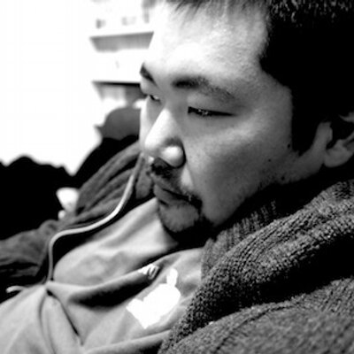
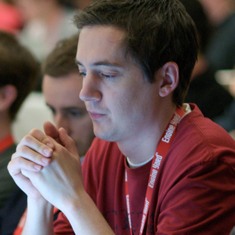

GREE Tech Talk6回目のテーマは「Practical Go」です。
今回はGo言語での実際の開発や運用、実際に出会った問題などをテーマとし、皆様と一緒に実践的なGo言語のノウハウについて学びを深めたいと思います。
さらにInfluxDBのCEO Paul Dixをゲストにお招きし、StartupでのGolangや実際に出会った問題などについてお話いただきます。
2014年9月24日(水) 開場：18:30、終了：22:00
東京都港区六本木6-10-1 六本木ヒルズ森タワー
グリー株式会社
|  牧 大輔 @lestrrat |
プログラマー。ブラジル・アメリカで育ち、米Network Appliance Incに勤務後帰国。ライブドア（株）や起業などを経て、現在LINE株式会社エンジニアおよびJapan Perl Association代表理事。2011年 White Camel Award受賞。2014年よりPerl Grants Committeeメンバー。得意分野はPerl/Go、MySQL/PostgreSQL等の主にオープンソース技術を使ったシステム構築。オープンソースで提供されているPerlモジュールの著作も多数。講演や監訳も行う。ハンドルネームはlestrrat。 |
田沼 修平 @chobi_e |
PHPが専門ですが使えるものはとことん使いたおすのが信条。主にバックエンドが得意ですが興味がでたらなんでもござれ！GREE開発本部所属。ソーシャルゲームの開発・運用などを経験した後に、サービスの信頼性を高める為の運用・開発に日々取り組んでいます。PHP/PECL拡張のメンテナとしてProtocolBuffersやlibuvなどのバインディングを作成し、その他にも多くのOSS活動に精力的に取り組んでいます。InfluxDBに出会ったことでGoに目覚めてしまいました。 |
|  Paul Dix @pauldix |
CEO of @InfluxDB (YC W13), organizer of NYC Machine Learning, series editor for Addison Wesley's Data & Analytics, author of Service Oriented Design with Ruby. |
{kind=link}